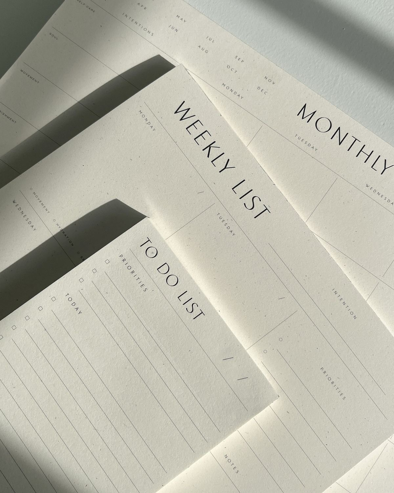
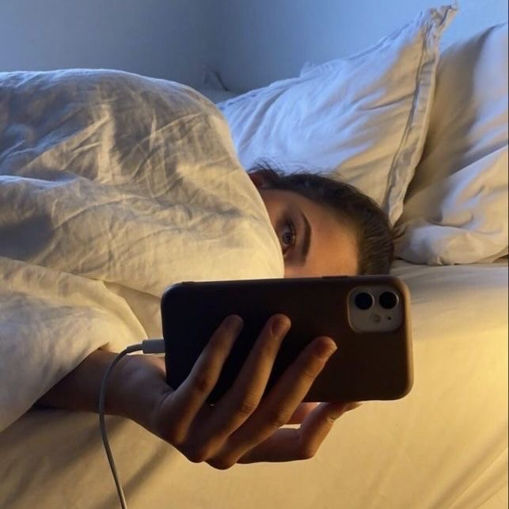

|  |
1. Productivity
|
|  |
2. Laziness
|
3. Lying to yourself
|

Efficient time management is crucial for balancing school, activities, and personal life. Break tasks into smaller chunks, prioritize them by deadlines and importance, and tackle them step by step. Use tools like planners, digital calendars, or apps to keep track of assignments and exams. For example, work for 25 minutes, then take a 5-minute break to stay focused and avoid burnout.

Take some paper and write down the important information you need to remember. Use colors and organize it nicely. It can make studying more fun and motivating. Write down key facts, vocabulary, and anything likely to be on the exam. This helps you focus on what matters and makes it easier to learn. These notes are super useful when studying. Instead of searching through your textbooks or messy notes, you’ll have everything you need in one place. It saves time and helps you memorize better.
Use apps:
By limiting phone use during study sessions. Technology can be a powerful tool for echancing producivity, but only if used wisely.

It is not embarrassing to ask questions. You must ask
questions if you want to learn. If there is something
that you don't understand, just ask. Ask the teacher,
ask your classmates, ask the internet (AI).
You will block your learning so much if you never
ask and either assume that it won't show up in exam
or never bother to figure it out. Also if you
have questions, you should ask because other
students may have similar questions too.
So, you are helping yourself and others at the same time.
When reviewing, focus on the main ideas and
key facts instead of focusing on small details
or practice problems. Watch recap videos on
YouTube to refresh your understanding of
key concepts. Go through your study guide
to make sure you understand the
important topics. Afterward, give yourself
some rest to let your brain process and
remember the information better.
Your mindset plays a big role in your success. First, you need to believe in yourself. If you keep thinking, “I’m not smart enough” or “I can’t do this,” it will hold you back. Stop making excuses and trust that you can learn and improve. Remind yourself that you’re just as capable as anyone else and, with effort, you can even surpass them. When you start believing in your abilities, you’ll feel more motivated to take action. Over time, this belief will grow stronger, and you’ll naturally start making choices that match your new positive mindset. By building confidence and focusing on your potential, you can achieve anything you set your mind to.
Sometimes you need motivation to start studying or keep going.
Watching motivation videos can help when you feel unmotivated.
Remember, you’re young, and your brain is at its strongest right now.
Learning new things later in life can be harder, so take advantage of
this time to learn it now. Your grades do matter. They reflect important
qualities like perseverance, intelligence, discipline, and so much more.
It’s never too late to improve. Start making changes now to
build a better future for yourself.
Schedule "me time" just like any other task. Whether it’s exercise,
a hobby, or relaxation, make time to recharge. Good physical and
mental health is essential for success. Exercise, a balanced diet,
and enough sleep to help you maintain energy and focus. Managing stress
through mindfulness, hobbies, or socializing prevents burnout,
keeps you motivated, and ensures you're ready to handle your
academic tasks effectively.